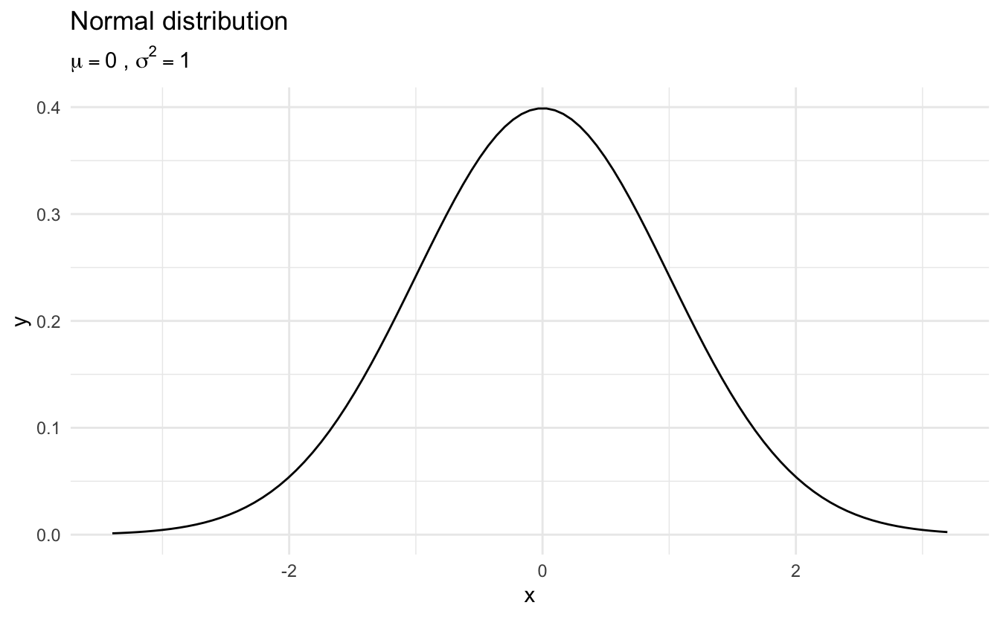
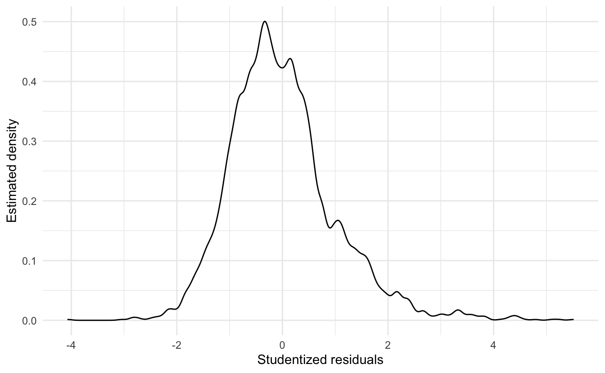
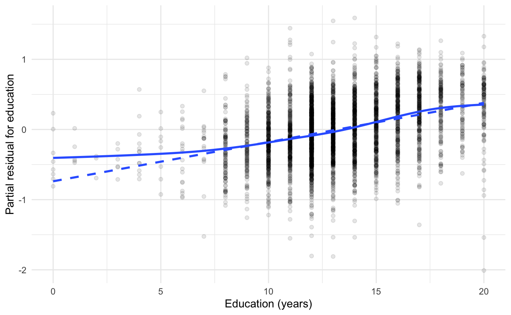

Lecture 13 Maximum likelihood estimation and linear regression
Learning objectives
- Define maximum likelihood estimation (MLE)
- Review the properties of the maximum likelihood estimator
- Demonstrate MLE for basic estimators
- Define ordinary least squares (OLS) estimation
- Identify why OLS estimator is the best linear unbiased estimator
- Identify key assumptions of OLS models
- Evaluate methods to test for violations of assumptions
- Consider how to alleviate violations
13.1 Maximum likelihood
The most common method for estimating parameters in a parametric model is the maximum likelihood method. Let \(X_1, \ldots, X_n\) be IID with PDF \(f(x; \theta)\). The likelihood function is defined by
\[\Lagr_n(\theta) = \prod_{i=1}^n f(X_i; \theta)\]
The log-likelihood function is defined by \(\lagr_n (\theta) = \log \Lagr_n(\theta)\). The likelihood function is the joint density of the data, except we treat it as a function of the parameter \(\theta\). However the likelihood function is not a density function â it is a likelihood function. In general, it is not true that \(\Lagr_n(\theta)\) integrates to 1 (with respect to \(\theta\)).
The maximum likelihood estimator (MLE), denoted by \(\hat{\theta}_n\), is the value of \(\theta\) that maximizes \(\Lagr_n(\theta)\). The maximum of \(\lagr_n(\theta)\) occurs at the same place as the maximum of \(\Lagr_n(\theta)\), so maximizing the log-likelihood leads to the same answer as maximizing the likelihood. Often, it is just easier to work with the log-likelihood.
If we multiply \(\Lagr_n(\theta)\) by any positive constant \(c\) (not depending on \(\theta\)) then this will not change the MLE. Thus we shall drop constants in the likelihood function.
Example 13.1 (Bernoulli distribution) Suppose that \(X_1, \ldots, X_n \sim \text{Bernoulli} (\pi)\). The probability function is
\[f(x; \pi) = \pi^x (1 - \pi)^{1 - x}\]
for \(x = 0,1\). The unknown parameter is \(\pi\). Then,
\[ \begin{align} \Lagr_n(\pi) &= \prod_{i=1}^n f(X_i; \pi) \\ &= \prod_{i=1}^n \pi^{X_i} (1 - \pi)^{1 - X_i} \\ &= \pi^S (1 - \pi)^{n - S} \end{align} \]
where \(S = \sum_{i} X_i\). The log-likelihood function is therefore
\[\lagr_n (\pi) = S \log(\pi) + (n - S) \log(1 - \pi)\]
To analytically solve for \(\hat{\pi}_n\), take the derivative of \(\lagr_n (\pi)\), set it equal to 0, and solve for \(\hat{\pi}_n = \frac{S}{n}\).
Example 13.2 (Normal distribution) Let \(X_1, \ldots, X_n \sim N(\mu, \sigma^2)\). The parameter is \(\theta = (\mu, \sigma)\) and the likelihood function (ignoring some constants) is:
\[ \begin{align} \Lagr_n (\mu, \sigma) &= \prod_i \frac{1}{\sigma} \exp \left[ - \frac{1}{2\sigma^2} (X_i - \mu)^2 \right] \\ &= \frac{1}{\sigma^n} \exp \left[ - \frac{1}{2\sigma^2} \sum_i (X_i - \mu)^2 \right] \\ &= \frac{1}{\sigma^n} \exp \left[ \frac{n S^2}{2 \sigma^2} \right] \exp \left[ - \frac{n (\bar{X} - \mu)^2}{2 \sigma^2} \right] \end{align} \]
where \(\bar{X} = \frac{1}{n} \sum_i X_i\) is the sample mean and \(S^2 = \frac{1}{n} \sum_i (X_i - \bar{X})^2\). The log-likelihood is
\[\lagr_n (\mu, \sigma) = -n \log \sigma - \frac{nS^2}{2\sigma^2} - \frac{n(\bar{X} - \mu)^2}{2\sigma^2}\]
Calculating the first derivatives with respect to \(\mu\) and \(\sigma\), setting them equal to 0, and solving for \(\hat{\mu}, \hat{\sigma}\) leads to \(\hat{\mu} = \bar{X} = \E [X]\) and \(\hat{\sigma} = S = \sqrt{\Var[X]}\). So the mean and variance/standard deviation of a normal distribution are also maximum likelihood estimators.
13.1.1 Properties of maximum likelihood estimators
Under certain conditions, the maximum likelihood estimator \(\hat{\theta}_n\) possesses many properties that make it an appealing choice of estimatory. The main properties are:
- Consistency
- Equivariant
- Asymptotically Normal
- Asymptotically optimal or efficient
These properties generally hold true for random variables with large sample sizes and smooth conditions for \(f(x; \theta)\). If these requirements are not met, then MLE may not be a good estimator for the parameter of interest.
13.1.1.1 Consistency
The MLE is consistent, in that \(\hat{\theta}_n \xrightarrow{P} \theta_*\), where \(\theta_*\) denotes the true value of the parameter \(\theta\). Consistency means that the MLE converges in probability to the true value as the number of observations increases.
13.1.1.2 Equivariance
Equivariance indicates that if \(\hat{\theta}_n\) is the MLE of \(\theta\), then \(g(\hat{\theta}_n)\) is the MLE of \(g(\theta)\). Basically, the MLE estimator for a random variable transformed by a function \(g(x)\) is also the MLE estimator for the new random variable \(g(x)\). For example, let \(X_1, \ldots, X_n \sim N(\theta,1)\). The MLE for \(\theta\) is \(\hat{\theta}_n = \bar{X}_n\). Let \(\tau = e^\theta\). Then the MLE for \(\tau\) is \(\hat{\tau} = e^{\hat{\theta}} = e^{\bar{X}}\).
13.1.1.3 Asymptotic normality
Asymptotic normality indicates that the distribution of the MLE estimator is asymptotically normal. That is, let \(\se = \sqrt{\Var (\hat{\sigma}_n)}\).
\[\frac{\hat{\theta}_n - \theta_*}{\se} \leadsto N(0,1)\]
The distribution of the true standard error of \(\hat{\theta}_n\) is approximately a standard Normal distribution. Since we typically have to estimate the standard error from the data, it also holds true that
\[\frac{\hat{\theta}_n - \theta_*}{\widehat{\se}} \leadsto N(0,1)\]
The proof of this property is in the book. Informally, this means that the distribution of the MLE can be approximated with \(N(\theta, \widehat{\se}^2)\). This is what allows us to construct confidence intervals for point estimates like we saw previously. As long as the sample size is sufficiently large and \(f(x; \theta)\) is sufficiently smooth, this property holds true and we do not need to estimate actual confidence intervals for the MLE â the Normal approximation is sufficient.
13.1.1.4 Optimality
Suppose that \(X_1, \ldots, X_n \sim N(\theta, \sigma^2)\). The MLE is \(\hat{\sigma}_n = \bar{X}_n\). Another reasonable estimator of \(\theta\) is the sample median \(\tilde{\theta}_n\). The MLE satisfies
\[\sqrt{n} (\hat{\theta}_n - \theta) \leadsto N(0, \sigma^2)\]
It can be shown that the median satisfies
\[\sqrt{n} (\tilde{\theta}_n - \theta) \leadsto N \left(0, \sigma^2 \frac{\pi}{2} \right)\]
This means the median converges to the right value but has a larger variance than the MLE.
More generally, consider two estimators \(T_n\) and \(U_n\), and suppose that
\[ \begin{align} \sqrt{n} (T_n - \theta) &\leadsto N(0, t^2) \\ \sqrt{n} (U_n - \theta) &\leadsto N(0, u^2) \\ \end{align} \]
We define the asymptotic relative efficiency of \(U\) to \(T\) by \(\text{ARE}(U, T) = \frac{t^2}{u^2}\). In the Normal example, \(\text{ARE}(\tilde{\theta}_n, \hat{\theta}_n) = \frac{2}{\pi} \approx .63\). The interpretation is that if you use the median, you are effectively using only a fraction of the data and your estimate is not as optimal as the mean.
Fundamentally, if \(\hat{\theta}_n\) is the MLE and \(\tilde{\theta}_n\) is any other estimator, then
\[\text{ARE} (\tilde{\theta}_n, \hat{\theta}_n) \leq 1\]
Thus, the MLE has the smallest (asymptotic) variance and we say the MLE is efficient or asymptotically optimal.
Example 13.3 (Calculating the MLE of the mean of the Normal variable) We presume the response variable \(Y\) is drawn from a Gaussian (normal) distribution with mean \(\mu\) and variance \(\sigma^2\):
\[\Pr(X_i = x_i) = \frac{1}{\sqrt{2\pi\sigma^2}} \exp \left[\frac{(X_i - \mu)^2}{2\sigma^2}\right]\]

This is the density, or probability density function (PDF) of the variable \(Y\).
- The probability that, for any one observation \(i\), \(Y\) will take on the particular value \(y\).
- This is a function of \(\mu\), the expected value of the distribution, and \(\sigma^2\), the variability of the distribution around the mean.
We want to generate estimates of the parameters \(\hat{\mu}_n\) and \(\hat{\sigma}_n^2\) based on the data. For the normal distribution, the log-likelihood function is:
\[ \begin{align} \lagr_n(\mu, \sigma^2 | X) &= \log \prod_{i = 1}^{N}{\frac{1}{\sqrt{2\pi\sigma^2}} \exp \left[\frac{(X_i - \mu)^2}{2\sigma^2}\right]} \\ &= \sum_{i=1}^{N}{\log\left(\frac{1}{\sqrt{2\pi\sigma^2}} \exp \left[\frac{(X_i - \mu)^2}{2\sigma^2}\right]\right)} \\ &= -\frac{N}{2} \log(2\pi) - \left[ \sum_{i = 1}^{N} \log{\sigma^2 - \frac{1}{2\sigma^2}} (X_i - \mu)^2 \right] \end{align} \]
Suppose we had a sample of assistant professor salaries:
| id | salary |
|---|---|
| 1 | 60 |
| 2 | 55 |
| 3 | 65 |
| 4 | 50 |
| 5 | 70 |
If we want to explain the distribution of possible assistant professor salaries given these data points, we could use maximum-likelihood estimation to find the \(\hat{\mu}\) that maximizes the likelihood of the data. We are testing different values for \(\mu\) to see what optimizes the function. If we have no regressors or predictors, \(\hat{\mu}\) is a constant. Furthermore, we treat \(\sigma^2\) as a nuisance parameter and hold it constant at \(\sigma^2 = 1\). The log-likelihood curve would look like this:
And the maximum is 60, which is the mean of the 5 sample observations. Notice our choice of value for \(\sigma^2\) doesnât change our estimate \(\hat{\mu}_n\).
13.2 Least squares regression
Regression is a method for studying the relationship between a response variable \(Y\) and a covariate \(X\) (also known as the predictor variable or a feature). One way to summarize this relationship between \(X\) and \(Y\) is through a regression function:
\[r(x) = \E (Y | X = x) = \int y f(y|x) dy\]
Our goal is to estimate the regression function \(r(x)\) from the data of the form
\[(Y_1, X_1), \ldots, (Y_n, X_n) \sim F_{X,Y}\]
13.2.1 Simple linear regression
The simplest form of regression is when \(X_i\) is simple (one-dimensional) and \(r(x)\) is assumed to be linear:
\[r(x) = \beta_0 + \beta_1 x\]
This model is called the simple linear regression model. We make the further assumption that \(\Var (\epsilon_i | X = x) = \sigma^2\) does not depend on \(x\). Thus the linear regression model is:
\[Y_i = \beta_0 + \beta_1 X_i + \epsilon_i\]
where \(\E (\epsilon_i | X_i) = 0\) and \(\Var (\epsilon_i | X_i) = \sigma^2\). The unknown parameters in the model are the intercept \(\beta_0\) and the slope \(\beta_1\) and the variance \(\sigma^2\). Let \(\hat{\beta}_0\) and \(\hat{\beta}_1\) denote estimates of \(\beta_0\) and \(\beta_1\). The fitted line is
\[\hat{r}(x) = \hat{\beta}_0 + \hat{\beta}_1 x\]
The predicted values or fitted values are
\[\hat{Y}_i = \hat{r}(X_i)\]
and the residuals are defined as
\[\hat{\epsilon}_i = Y_i - \hat{Y}_i = Y_i - (\hat{\beta}_0 + \hat{\beta}_1 x)\]
The residual sum of squares or RSS measures how well the line fits the data. It is defined by
\[RSS = \sum_{i=1}^n \hat{\epsilon}_i^2\]
13.2.2 Estimation strategy
What is an appropriate way to estimate the \(\beta\)s? We could fit many lines to this data, some better than others.
We should seek estimators with some set of desired qualities. Classically, two desired qualities for an estimator are unbiasedness and efficiency.
Definition 13.1 (Unbiasedness) \(\E(\hat{\beta}) = \beta\), or an estimator that âgets it rightâ vis-a-vis \(\beta\).
Definition 13.2 (Efficiency) \(\min(\Var(\hat{\beta}))\). Not only do we get it right, but for any given sample used to generate the model we never want to be too far off from ârightâ.
13.2.3 Least squares estimator
The least squares estimates are the values \(\hat{\beta}_0, \hat{\beta}_1\) that minimize the RSS.
\[\min(RSS)\]
This requires a bit of calculus to solve.
\[ \begin{aligned} RSS &= \sum_{i=1}^n \hat{\epsilon}_i^2 \\ \sum_{i=1}^n (\hat{\epsilon}_i)^2 &= \sum_{i=1}^n (Y_i - (\beta_0 + \beta_1 X_i))^2\\ f(\beta_0, \beta_1 | x_i, y_i) & = \sum_{i=1}^n (Y_i - \beta_0 - \beta_1 X_i )^2\\ \dfrac{\partial{ f(\beta_0, \beta_1 | x_i, y_i)}}{\partial \beta_0} & = -2 (\sum_{i=1}^n (Y_i - \beta_0 - \beta_1 X_i))\\ & = \sum_{i=1}^n -2Y_i + 2\beta_0 + 2\beta_1 X_i\\ 0 & = \sum_{i=1}^n -2Y_{i} + 2\beta_0 + 2\beta_1 X_i\\ 0 & = -2 \sum_{i=1}^n Y_{i} + 2\sum_{i=1}^n \beta_0 + 2\beta_1 \sum_{i=1}^n X_i\\ 0 & = -2 \sum_{i=1}^n Y_{i} + (n \times 2\beta_0) + 2\beta_1 \sum_{i=1}^n X_i\\ n \times 2\beta_0 & = 2 \sum_{i=1}^n Y_i - 2\beta_1 \sum_{i=1}^n X_i\\ \hat \beta_0 & = \dfrac{2 \sum_{i=1}^n Y_i}{2n} - \dfrac{2\beta_1 \sum_{i=1}^n X_i}{2n}\\ & = \dfrac{\sum_{i=1}^n Y_i}{n} - \beta_1\dfrac{ \sum_{i=1}^n X_i}{n}\\ \hat \beta_0 & = \bar{Y}_n - \beta_1 \bar{X}_n \end{aligned} \]
\[ \begin{aligned} \dfrac{\partial{ f(\beta_0, \beta_1 | x_i, y_i)}}{\partial \beta_1} & = \sum_{i=1}^n -2X_i(Y_i - \beta_0 - \beta_1 X_i) \\ & = \sum_{i=1}^n -2Y_iX_i + 2\beta_0X_i + 2\beta_1 X_i^2\\ 0 & = \sum_{i=1}^n -2Y_iX_i + 2\beta_0 \sum_{i=1}^nX_i + 2\beta_1 \sum_{i=1}^n X_i^2\\ & = \sum_{i=1}^n -2Y_iX_i + 2 (\bar{Y}_n - \beta_1 \bar{X}_n) \sum_{i=1}^nX_i + 2\beta_1 \sum_{i=1}^n X_i^2\\ & = \sum_{i=1}^n -2Y_iX_i + 2\bar{Y}_n \sum_{i=1}^nX_i - 2\beta_1 \bar{X}_n\sum_{i=1}^nX_i + 2\beta_1 \sum_{i=1}^n X_i^2\\ 2\beta_1 \sum_{i=1}^n X_i^2 - 2\beta_1 \bar{X}_n\sum_{i=1}^nX_i & = \sum_{i=1}^n 2Y_iX_i - 2\bar{Y}_n \sum_{i=1}^nX_i\\ \beta_1 ( \sum_{i=1}^n X_i^2 - \bar{X}_n\sum_{i=1}^nX_i ) & = \sum_{i=1}^n Y_iX_i - \bar{Y}_n \sum_{i=1}^nX_i\\ \hat \beta_1 & = \dfrac{ \sum_{i=1}^n Y_iX_i - \bar{Y}_n \sum_{i=1}^nX_i}{ \sum_{i=1}^n X_i^2 - \bar{X}_n\sum_{i=1}^nX_i}\\ \hat \beta_0 & = \bar{Y}_n - \hat{\beta}_1 \bar{X}_n \end{aligned} \]
Recall that we also need an estimate for \(\sigma^2\). An unbiased estimate turns out to be
\[\hat{\sigma}^2 = \left( \frac{1}{n - 2} \right) \sum_{i=1}^n \hat{\epsilon}_i^2\]
13.2.4 Maximum likelihood estimation
Suppose we add the assumption that \(\epsilon_i | X_i \sim N(0, \sigma^2)\), that is,
\[Y_i | X_i \sim N(\mu_i, \sigma^2)\]
where \(\mu_i = \beta_0 + \beta_1 X_i\). This means each \(i\)th observation has a systematic mean that varies based on the value of \(X_i\). The likelihood function is
\[ \begin{align} \prod_{i=1}^n f(X_i, Y_i) &= \prod_{i=1}^n f_X(X_i) f_{Y | X} (Y_i | X_i) \\ &= \prod_{i=1}^n f_X(X_i) \times \prod_{i=1}^n f_{Y | X} (Y_i | X_i) \\ &= \Lagr_1 \times \Lagr_2 \end{align} \]
where
\[ \begin{align} \Lagr_1 &= \prod_{i=1}^n f_X(X_i) \\ \Lagr_2 &= \prod_{i=1}^n f_{Y | X} (Y_i | X_i) \end{align} \]
\(\Lagr_1\) does not involve the parameters \(\beta_0, \beta_1\). Instead we can focus on the second term \(\Lagr_2\) which is called the conditional likelihood, given by
\[ \begin{align} \Lagr_2 &\equiv \Lagr(\beta_0, \beta_1, \sigma^2) \\ &= \prod_{i=1}^n f_{Y | X}(Y_i | X_i) \\ &\propto \frac{1}{\sigma} \exp \left\{ -\frac{1}{2\sigma^2} \sum_{i=1}^n (Y_i - \mu_i)^2 \right\} \end{align} \]
The conditional log-likelihood is
\[\lagr(\beta_0, \beta_1, \sigma^2) = -n \log(\sigma) - \frac{1}{2\sigma^2} \left( Y_i - (\beta_0 + \beta_1 X_i) \right)^2\]
To find the MLE of \((\beta_0, \beta_1)\), we maximize \(\lagr(\beta_0, \beta_1, \sigma^2)\). This is equivalent to minimizing the RSS
\[RSS = \sum_{i=1}^n \hat{\epsilon}_i^2 = \sum_{i=1}^n \left( Y_i - (\hat{\beta}_0 + \hat{\beta}_1 x) \right)\]
Therefore, under the assumption that the residuals are distributed normally, the least squares estimator is also the maximum likelihood estimator.
13.2.5 Properties of the least squares estimator
In regression problems, we usually focus on the properties of the estimators conditional on \(X^n = (X_1, \ldots, X_n)\). Thus we state the means and variances as conditional means and variances.
Let \(\hat{\beta}^T = (\hat{\beta}_0, \hat{\beta}_1)^T\) denote the least squares estimators (\(^T\)) simply indicates the vector is transposed to be a column vector. Then
\[ \begin{align} \E (\hat{\beta} | X^n) &= \begin{pmatrix} \beta_0 \\ \beta_1 \end{pmatrix} \\ \Var (\hat{\beta} | X^n) &= \frac{\sigma^2}{n s_X^2} \begin{pmatrix} \frac{1}{n} \sum_{i=1}^n X_i^2 & -\bar{X}^n \\ -\bar{X}^n & 1 \end{pmatrix} \end{align} \]
where
\[s_X^2 = \frac{1}{n} \sum_{i=1}^n (X_i - \bar{X}_n)^2\]
The estimated standard errors of \(\hat{\beta}_0, \hat{\beta}_1\) are obtained by taking the square roots of the corresponding diagonal terms of \(\Var (\hat{\beta} | X^n)\) and inserting the estimate \(\hat{\sigma}\) for \(\sigma\). Thus,
\[ \begin{align} \widehat{\se} (\hat{\beta}_0) &= \frac{\hat{\sigma}}{s_X \sqrt{n}} \sqrt{\frac{ \sum_{i=1}^n X_i^2}{n}} \\ \widehat{\se} (\hat{\beta}_1) &= \frac{\hat{\sigma}}{s_X \sqrt{n}} \end{align} \]
Under appropriate conditions, these estimators meet the criteria for maximum likelihood estimators.
13.3 Assumptions of linear regression models
Basic linear regression follows the functional form:
\[Y_i = \beta_0 + \beta_1 X_i + \epsilon_i\]
where \(Y_i\) is the value of the response variable \(Y\) for the \(i\)th observation, \(X_i\) is the value for the explanatory variable \(X\) for the \(i\)th observation. The coefficients \(\beta_0\) and \(\beta_1\) are population regression coefficients - our goal is to estimate these population parameters given the observed data. \(\epsilon_i\) is the error representing the aggregated omitted causes of \(Y\), other explanatory variables that could be included in the model, measurement error in \(Y\), and any inherently random component of \(Y\).
The key assumptions of linear regression concern the behavior of the errors.
13.3.1 Linearity
The expectation of the error is 0:
\[\E(\epsilon_i) \equiv E(\epsilon_i | X_i) = 0\]
This allows us to recover the expected value of the response variable as a linear function of the explanatory variable:
\[ \begin{aligned} \mu_i \equiv E(Y_i) \equiv E(Y | X_i) &= E(\beta_0 + \beta_1 X_i + \epsilon_i) \\ \mu_i &= \beta_0 + \beta_1 X_i + E(\epsilon_i) \\ \mu_i &= \beta_0 + \beta_1 X_i + 0 \\ \mu_i &= \beta_0 + \beta_1 X_i \end{aligned} \]
13.3.2 Constant variance
The variance of the errors is the same regardless of the values of \(X\):
\[\Var(\epsilon_i | X_i) = \sigma^2\]
13.3.3 Normality
The errors are assumed to be normally distributed:
\[\epsilon_i \mid X_i \sim N(0, \sigma^2)\]
13.3.4 Independence
Observations are sampled independently from one another. Any pair of errors \(\epsilon_i\) and \(\epsilon_j\) are independent for \(i \neq j\). Simple random sampling from a large population will ensure this assumption is met. However data collection procedures frequently (and explicitly) violate this assumption (e.g. time series data, panel survey data).
13.3.5 Fixed \(X\), or \(X\) measured without error and independent of the error
\(X\) is assumed to be fixed or measured without error and independent of the error. With a fixed \(X\), the researcher controls the precise value of \(X\) for a given observation (think experimental design with treatment/control). In observational study, we assume \(X\) is measured without error and that the explanatory variable and the error are independent in the population from which the sample is drawn.
\[\epsilon_i \sim N(0, \sigma^2), \text{for } i = 1, \dots, n\]
13.3.6 \(X\) is not invariant
If \(X\) is fixed, it must vary (i.e. itâs values cannot all be the same). If \(X\) is random, then in the population \(X\) must vary. You cannot estimate a regression line for an invariant \(X\).
13.3.7 Handling violations of assumptions
If these assumptions are violated, conducting inference from linear regression becomes tricky, biased, inefficient, and/or error prone. You could move to a more robust inferential method such as nonparametric regression, decision trees, support vector machines, etc., but these methods are more tricky to generate inference about the explanatory variables. Instead, we can attempt to diagnose assumption violations and impose solutions while still constraining ourselves to a linear regression framework.
13.4 Unusual and influential data
Outliers are observations that are somehow unusual, either in their value of \(Y_i\), of one or more \(X_i\)s, or some combination thereof. Outliers have the potential to have a disproportionate influence on a regression model.
13.4.1 Terms
Outlier - an observation that has an unusual value on the dependent variable \(Y\) given its particular combination of values on \(X\)
Leverage - degree of potential influence on the coefficient estimates that a given observation can (but not necessarily does) have
Discrepancy - extent to which an observation is âunusualâ or âdifferentâ from the rest of the data
Influence - how much effect a particular observationâs value(s) on \(Y\) and \(X\) have on the coefficient estimates. Influence is a function of leverage and discrepancy:
\[\text{Influence} = \text{Leverage} \times \text{Discrepancy}\]
- Dino is an observation with high leverage but low discrepancy (close to the regression line defined by Betty, Fred, and Wilma). Therefore he has little impact on the regression line (long dashed line); his influence is low because his discrepancy is low.
- Barney has high leverage (though lower than Dino) and high discrepancy, so he substantially influences the regression results (short-dashed line).
13.4.2 Measuring leverage
Leverage is typically assessed using the leverage (hat) statistic:
\[h_i = \frac{1}{n} + \frac{(X_i - \bar{X})^2}{\sum_{j=1}^{n} (X_{j} - \bar{X})^2}\]
- Measures the contribution of observation \(Y_i\) to the fitted value \(\hat{Y}_j\) (the other values in the dataset)
- It is solely a function of \(X\)
- Larger values indicate higher leverage
- \(\frac{1}{n} \leq h_i \leq 1\)
- \(\bar{h} = \frac{(p + 1)}{n}\)
Observations with a leverage statistic greater than the average could have high leverage.
13.4.3 Measuring discrepancy
Residuals are a natural way to look for discrepant or outlying observations (discrepant observations typically have large residuals, or differences between actual and fitted values for \(y_i\).) The problem is that variability of the errors \(\hat{\epsilon}_i\) do not have equal variances, even if the actual errors \(\epsilon_i\) do have equal variances:
\[\Var(\hat{\epsilon}_i) = \sigma^2 (1 - h_i)\]
High leverage observations tend to have small residuals, which makes sense because they pull the regression line towards them. Alternatively we can calculate a standardized residual which parses out the variability in \(X_i\) for \(\hat{\epsilon}_i\):
\[\hat{\epsilon}_i ' \equiv \frac{\hat{\epsilon}_i}{S_{E} \sqrt{1 - h_i}}\]
where \(S_E\) is the standard error of the regression:
\[S_E = \sqrt{\frac{\hat{\epsilon}_i^2}{(n - k - 1)}}\]
The problem is that the numerator and the denominator are not independent - they both contain \(\hat{\epsilon}_i\), so \(\hat{\epsilon}_i '\) does not follow a \(t\)-distribution. Instead, we can modify this measure by calculating \(S_{E(-i)}\); that is, refit the model deleting each \(i\)th observation, estimating the standard error of the regression \(S_{E(-i)}\) based on the remaining \(i-1\) observations. We then calculate the studentized residual:
\[\hat{\epsilon}_i^{\ast} \equiv \frac{\hat{\epsilon}_i}{S_{E(-i)} \sqrt{1 - h_i}}\]
which now has an independent numerator and denominator and follows a \(t\)-distribution with \(n-k-2\) degrees of freedom. They are on a common scale and we should expect roughly 95% of the studentized residuals to fall within the interval \([-2,2]\).
13.4.4 Measuring influence
As described previously, influence is the a combination of an observationâs leverage and discrepancy. In other words, influence is the effect of a particular observation on the coefficient estimates. A simple measure of that influence is the difference between the coefficient estimate with and without the observation in question:
\[D_{ij} = \hat{\beta_1j} - \hat{\beta}_{1j(-i)}, \text{for } i=1, \dots, n \text{ and } j = 0, \dots, k\]
This measure is called \(\text{DFBETA}_{ij}\). Since coefficient estimates are scaled differently depending on how the variables are scaled, we can rescale \(\text{DFBETA}_{ij}\) by the coefficientâs standard error to account for this fact:
\[D^{\ast}_{ij} = \frac{D_{ij}}{SE_{-i}(\beta_{1j})}\]
This measure is called \(\text{DFBETAS}_{ij}\).
- Positive values of \(\text{DFBETAS}_{ij}\) correspond to observations which decrease the estimate of \(\hat{\beta}_{1j}\)
- Negative values of \(\text{DFBETAS}_{ij}\) correspond to observations which increase the estimate of \(\hat{\beta}_{1j}\)
Frequently \(\text{DFBETA}\)s are used to construct summary statistics of each observationâs influence on the regression model. Cookâs D is based on the theory that one could conduct an \(F\)-test on each observation for the hypothesis that \(\beta_{1j} = \hat{\beta}_{1k(-i)} \forall j \in J\). The formula for this measure is:
\[D_i = \frac{\hat{\epsilon}^{'2}_i}{k + 1} \times \frac{h_i}{1 - h_i}\]
where \(\hat{\epsilon}^{'2}_i\) is the squared standardized residual, \(k\) is the number of parameters in the model, and \(\frac{h_i}{1 - h_i}\) is the hat value. We look for values of \(D_i\) that stand out from the rest.
13.4.5 Visualizing leverage, discrepancy, and influence
For example, here are the results of a basic model of the number of federal laws struck down by the U.S. Supreme Court in each Congress, based on:
- Age - the mean age of the members of the Supreme Court
- Tenure - mean tenure of the members of the Court
- Unified - a dummy variable indicating whether or not the Congress was controlled by the same party in that period
## # A tibble: 4 Ã 5
## term estimate std.error statistic p.value
## <chr> <dbl> <dbl> <dbl> <dbl>
## 1 (Intercept) -12.1 2.54 -4.76 0.00000657
## 2 age 0.219 0.0448 4.88 0.00000401
## 3 tenure -0.0669 0.0643 -1.04 0.300
## 4 unified 0.718 0.458 1.57 0.121A major concern with regression analysis of this data is that the results are being driven by outliers in the data.
During the 74th Congress (1935-36), the New Deal/Court-packing crisis was associated with an abnormally large number of laws struck down by the court. We should determine whether or not this observation is driving our results.
By combining all three variables into a âbubble plotâ, we can visualize all three variables simultaneously.
- Each observationâs leverage (\(h_i\)) is plotted on the \(x\) axis
- Each observationâs discrepancy (i.e. Studentized residual) is plotted on the \(y\) axis
- Each symbol is drawn proportional to the observationâs Cookâs \(D_i\)
The bubble plot tells us several things:
- The size/color of the symbols is proportional to Cookâs D, which is in turn a multiplicative function of the square of the Studentized residuals (Y axis) and the leverage (X axis), so observations farther away from \(Y=0\) and/or have higher values of \(X\) will have larger symbols.
- The plot tells us whether the large influence of an observation is due to high discrepancy, high leverage, or both
- The 104th Congress has relatively low leverage but is very discrepant
- The 74th and 98th Congresses demonstrate both high discrepancy and high leverage
13.4.6 Numerical rules of thumb
These are not hard and fast rules rigorously defended by mathematical proofs; they are simply potential rules of thumb to follow when interpreting the above statistics.
13.4.6.1 Hat-values
Anything exceeding twice the average \(\bar{h} = \frac{k + 1}{n}\) is noteworthy. In our example that would be the following observations:
## # A tibble: 9 Ã 10
## Congress congress nulls age tenure unified year hat student cooksd
## <chr> <dbl> <dbl> <dbl> <dbl> <dbl> <dbl> <dbl> <dbl> <dbl>
## 1 1st 1 0 49.8 0.800 1 1789 0.0974 0.330 0.00296
## 2 3rd 3 0 52.8 4.20 0 1793 0.113 0.511 0.00841
## 3 12th 12 0 49 6.60 1 1811 0.0802 0.669 0.00980
## 4 17th 17 0 59 16.6 1 1821 0.0887 -0.253 0.00157
## 5 20th 20 0 61.7 17.4 1 1827 0.0790 -0.577 0.00719
## 6 23rd 23 0 64 18.4 1 1833 0.0819 -0.844 0.0159
## 7 34th 34 0 64 14.6 0 1855 0.0782 -0.561 0.00671
## 8 36th 36 0 68.7 17.8 0 1859 0.102 -1.07 0.0326
## 9 99th 99 3 71.9 16.7 0 1985 0.0912 0.295 0.0022113.4.6.2 Studentized residuals
Anything outside of the range \([-2,2]\) is discrepant.
## # A tibble: 7 Ã 10
## Congress congress nulls age tenure unified year hat student cooksd
## <chr> <dbl> <dbl> <dbl> <dbl> <dbl> <dbl> <dbl> <dbl> <dbl>
## 1 67th 67 6 66 9 1 1921 0.0361 2.14 0.0415
## 2 74th 74 10 71.1 14.2 1 1935 0.0514 4.42 0.223
## 3 90th 90 6 64.7 13.3 1 1967 0.0195 2.49 0.0292
## 4 91st 91 6 65.1 13 1 1969 0.0189 2.42 0.0269
## 5 92nd 92 5 62 9.20 1 1971 0.0146 2.05 0.0150
## 6 98th 98 7 69.9 14.7 0 1983 0.0730 3.02 0.165
## 7 104th 104 8 60.6 12.5 1 1995 0.0208 4.48 0.089713.4.6.3 Influence
\[D_i > \frac{4}{n - k - 1}\]
where \(n\) is the number of observations and \(k\) is the number of coefficients in the regression model.
## # A tibble: 4 Ã 10
## Congress congress nulls age tenure unified year hat student cooksd
## <chr> <dbl> <dbl> <dbl> <dbl> <dbl> <dbl> <dbl> <dbl> <dbl>
## 1 67th 67 6 66 9 1 1921 0.0361 2.14 0.0415
## 2 74th 74 10 71.1 14.2 1 1935 0.0514 4.42 0.223
## 3 98th 98 7 69.9 14.7 0 1983 0.0730 3.02 0.165
## 4 104th 104 8 60.6 12.5 1 1995 0.0208 4.48 0.089713.4.7 How to treat unusual observations
13.4.7.1 Mistakes
If the data is just wrong (miscoded, mismeasured, misentered, etc.), then either fix the error, impute a plausible value for the observation, or omit the offending observation.
13.4.7.2 Weird observations
If the data for a particular observation is just strange, then you may want to ask âwhy is it so strange?â
- The data are strange because something unusual/weird/singular happened to that data point
- If that âsomethingâ is important to the theory being tested, then you may want to respecify your model
- If the answer is no, then you can drop the offending observation from the analysis
- The data are strange for no apparent reason
- Not really a good answer here. Try digging into the history of the observation to find out what is going on.
- Dropping the observation is a judgment call
- You could always rerun the model omitting the observation and including the results as a footnote (i.e. a robustness check)
For example, letâs re-estimate the SCOTUS model and omit observations that were commonly identified as outliers:23
## [1] 0.232
## [1] 0.258
## [1] 1.68
## [1] 1.29
- Not much has changed from the original model
- Estimate for age is a bit smaller, as well as a smaller standard error
- Tenure is also smaller, but only fractionally
- Unified is a bit larger and with a smaller standard error
- \(R^2\) is larger for the omitted observation model, and the RMSE is smaller
- These three observations mostly influenced the precision of the estimates (i.e. standard errors), not the accuracy of them
13.5 Non-normally distributed errors
Recall that OLS assumes errors are distributed normally:
\[\epsilon_i | X_i \sim N(0, \sigma^2)\]
However according to the central limit theorem, inference based on the least-squares estimator is approximately valid under broad conditions.24 So while the validity of the estimates is robust to violating this assumption, the efficiency of the estimates is not robust. Recall that efficiency guarantees us the smallest possible sampling variance and therefore the smallest possible mean squared error (MSE). Heavy-tailed or skewed distributions of the errors will therefore give rise to outliers (which we just recognized as a problem). Alternatively, we interpret the least-squares fit as a conditional mean \(Y | X\). But arithmetic means are not good measures of the center of a highly skewed distribution.
13.5.1 Detecting non-normally distributed errors
Graphical interpretations are easiest to detect non-normality in the errors. Consider a regression model using survey data from the 1994 wave of Statistics Canadaâs Survey of Labour and Income Dynamics (SLID), explaining hourly wages as an outcome of sex, education, and age:
## # A tibble: 3,997 Ã 4
## age sex compositeHourlyWages yearsEducation
## <dbl> <chr> <dbl> <dbl>
## 1 40 Male 10.6 15
## 2 19 Male 11 13
## 3 46 Male 17.8 14
## 4 50 Female 14 16
## 5 31 Male 8.2 15
## 6 30 Female 17.0 13
## 7 61 Female 6.7 12
## 8 46 Female 14 14
## 9 43 Male 19.2 18
## 10 17 Male 7.25 11
## # ⦠with 3,987 more rows
## # A tibble: 4 Ã 5
## term estimate std.error statistic p.value
## <chr> <dbl> <dbl> <dbl> <dbl>
## 1 (Intercept) -8.12 0.599 -13.6 5.27e- 41
## 2 sexMale 3.47 0.207 16.8 4.04e- 61
## 3 yearsEducation 0.930 0.0343 27.1 5.47e-149
## 4 age 0.261 0.00866 30.2 3.42e-180
## [1] 967 3911The above figure is a quantile-comparison plot, graphing for each observation its studentized residual on the \(y\) axis and the corresponding quantile in the \(t\)-distribution on the \(x\) axis. The dashed lines indicate 95% confidence intervals calculated under the assumption that the errors are normally distributed. If any observations fall outside this range, this is an indication that the assumption has been violated. Clearly, here that is the case.

From the density plot of the studentized residuals, we can also see that the residuals are positively skewed.
13.5.2 Fixing non-normally distributed errors
Power and log transformations are typically used to correct this problem. Here, trial and error reveals that by log transforming the wage variable, the distribution of the residuals becomes much more symmetric:
## # A tibble: 4 Ã 5
## term estimate std.error statistic p.value
## <chr> <dbl> <dbl> <dbl> <dbl>
## 1 (Intercept) 1.10 0.0380 28.9 1.97e-167
## 2 sexMale 0.224 0.0131 17.1 2.16e- 63
## 3 yearsEducation 0.0559 0.00217 25.7 2.95e-135
## 4 age 0.0182 0.000549 33.1 4.50e-212
## [1] 2760 326713.6 Non-constant error variance
Recall that linear regression assumes the error terms \(\epsilon_i\) have a constant variance, \(\text{Var}(\epsilon_i) = \sigma^2\). This is called homoscedasticity. Remember that the standard errors directly rely upon the estimate of this value:
\[\widehat{\se}(\hat{\beta}_{1j}) = \sqrt{\hat{\sigma}^{2} (X'X)^{-1}_{jj}}\]
If the variances of the error terms are non-constant (aka heteroscedastic), our estimates of the parameters \(\hat{\beta}_1\) will still be unbiased because they do not depend on \(\sigma^2\). However our estimates of the standard errors will be inaccurate - they will either be inflated or deflated, leading to incorrect inferences about the statistical significance of predictor variables.
13.6.1 Detecting heteroscedasticity
13.6.1.1 Graphically
We can uncover homo- or heteroscedasticity through the use of the residual plot. Below is data generated from the process:
\[Y_i = 2 + 3X_i + \epsilon\]
where \(\epsilon_i\) is random error distributed normally \(N(0,1)\).
Compare this to a linear model fit to the data generating process:
\[Y_i = 2 + 3X_i + \epsilon_i\]
where \(\epsilon_i\) is random error distributed normally \(N(0,\frac{X}{2})\). Note that the variance for the error term of each observation \(\epsilon_i\) is not constant, and is itself a function of \(X\).
We see a distinct funnel-shape to the relationship between the predicted values and the residuals. This is because by assuming the variance is constant, we substantially over or underestimate the actual response \(Y_i\) as \(X_i\) increases.
13.6.1.2 Statistical tests
There are formal statistical tests to check for heteroscedasticity. One such test is the Breusch-Pagan test. The procedure is:
- Estimate an OLS model and obtain the squared residuals \(\hat{\epsilon}^2\)
- Regress \(\hat{\epsilon}^2\) against:
- All the \(k\) variables you think might be causing the heteroscedasticity
- By default, include the same explanatory variables as the original model
- Calculate the coefficient of determination (\(R^2_{\hat{\epsilon}^2}\)) for the residual model and multiply it by the number of observations \(n\)
- The resulting statistic follows a \(\chi^2_{(k-1)}\) distribution
- Rejecting the null hypothesis indicates heteroscedasticity is present
The lmtest library contains a function for the Breusch-Pagan test:
##
## studentized Breusch-Pagan test
##
## data: sim_homo_mod
## BP = 1e-04, df = 1, p-value = 1
##
## studentized Breusch-Pagan test
##
## data: sim_hetero_mod
## BP = 168, df = 1, p-value <2e-1613.6.2 Accounting for heteroscedasticity
13.6.2.1 Weighted least squares regression
Instead of assuming the errors have a constant variance \(\text{Var}(\epsilon_i) = \sigma^2\), instead we can assume that the errors are independent and normally distributed with mean zero and different variances \(\epsilon_i \sim N(0, \sigma_i^2)\):
\[ \begin{bmatrix} \sigma_1^2 & 0 & 0 & 0 \\ 0 & \sigma_2^2 & 0 & 0 \\ 0 & 0 & \ddots & 0 \\ 0 & 0 & 0 & \sigma_n^2 \\ \end{bmatrix} \]
We can define the reciprocal of each variance \(\sigma_i^2\) as the weight \(w_i = \frac{1}{\sigma_i^2}\), then let matrix \(\mathbf{W}\) be a diagonal matrix containing these weights:
\[ \mathbf{W} = \begin{bmatrix} \frac{1}{\sigma_1^2} & 0 & 0 & 0 \\ 0 & \frac{1}{\sigma_2^2} & 0 & 0 \\ 0 & 0 & \ddots & 0 \\ 0 & 0 & 0 & \frac{1}{\sigma_n^2} \\ \end{bmatrix} \]
So rather than following the traditional linear regression estimator
\[\hat{\mathbf{\beta_1}} = (\mathbf{X}'\mathbf{X})^{-1} \mathbf{X}'\mathbf{y}\]
we can substitute in the weighting matrix \(\mathbf{W}\):
\[\hat{\mathbf{\beta_1}} = (\mathbf{X}' \mathbf{W} \mathbf{X})^{-1} \mathbf{X}' \mathbf{W} \mathbf{y}\]
\[\sigma_{i}^2 = \frac{\sum(w_i \hat{\epsilon}_i^2)}{n}\]
This is equivalent to minimizing the weighted sum of squares, according greater weight to observations with smaller variance.
How do we estimate the weights \(W_i\)?
- Use the residuals from a preliminary OLS regression to obtain estimates of the error variance within different subsets of observations.
- Model the weights as a function of observable variables in the model.
For example, using the first approach on our original SLID model:
## # A tibble: 4 Ã 5
## term estimate std.error statistic p.value
## <chr> <dbl> <dbl> <dbl> <dbl>
## 1 (Intercept) -8.12 0.599 -13.6 5.27e- 41
## 2 sexMale 3.47 0.207 16.8 4.04e- 61
## 3 yearsEducation 0.930 0.0343 27.1 5.47e-149
## 4 age 0.261 0.00866 30.2 3.42e-180
## # A tibble: 4 Ã 5
## term estimate std.error statistic p.value
## <chr> <dbl> <dbl> <dbl> <dbl>
## 1 (Intercept) -8.10 0.0160 -506. 0
## 2 sexMale 3.47 0.00977 356. 0
## 3 yearsEducation 0.927 0.00142 653. 0
## 4 age 0.261 0.000170 1534. 0We see some mild changes in the estimated parameters, but drastic reductions in the standard errors. The problem is that this reduction is potentially biased through the estimated covariance matrix because the sampling error in the estimates should reflect the additional source of uncertainty, which is not explicitly accounted for just basing it on the original residuals. Instead, it would be better to model the weights as a function of relevant explanatory variables.25
13.6.2.2 Corrections for the variance-covariance estimates
Alternatively, we could instead attempt to correct for heteroscedasticity only in the standard error estimates. This produces the same estimated parameters, but adjusts the standard errors to account for the violation of the constant error variance assumption (we wonât falsely believe our estimates are more precise than they really are.) One major estimation procedure are Huber-White standard errors (also called robust standard errors) which can be recovered using the car::hccm() function:26
## # A tibble: 4 Ã 6
## term estimate std.error statistic p.value std.error.rob
## <chr> <dbl> <dbl> <dbl> <dbl> <dbl>
## 1 (Intercept) -8.12 0.599 -13.6 5.27e- 41 0.636
## 2 sexMale 3.47 0.207 16.8 4.04e- 61 0.207
## 3 yearsEducation 0.930 0.0343 27.1 5.47e-149 0.0385
## 4 age 0.261 0.00866 30.2 3.42e-180 0.00881Notice that these new standard errors are a bit larger than the original model, accounting for the increased uncertainty of our parameter estimates due to heteroscedasticity.
13.7 Non-linearity in the data
By assuming the average error \(\E (\epsilon_i)\) is 0 everywhere implies that the regression line (surface) accurately reflects the relationship between \(X\) and \(Y\). Violating this assumption means that the model fails to capture the systematic relationship between the response and explanatory variables. Therefore here, the term nonlinearity could mean a couple different things:
- The relationship between \(X_1\) and \(Y\) is nonlinear - that is, it is not constant and monotonic
- The relationship between \(X_1\) and \(Y\) is conditional on \(X_2\) - that is, the relationship is interactive rather than purely additive
Detecting nonlinearity can be tricky in higher-dimensional regression models with multiple explanatory variables.
13.7.1 Partial residual plots
Define the partial residual for the \(j\)th explanatory variable:
\[\hat{\epsilon}_i^{(j)} = \hat{\epsilon}_i + \hat{\beta}_j X_{ij}\]
In essence, calculate the least-squares residual (\(\hat{\epsilon}_i\)) and add to it the linear component of the partial relationship between \(Y\) and \(X_j\). Finally, we can plot \(X_j\) versus \(\hat{\epsilon}_i^{(j)}\) and assess the relationship. For instance, consider the results of the logged wage model from earlier:

The solid lines are generalized additive models (GAMs), while the dashed lines are linear least-squares fits. For age, the partial relationship with logged wages is not linear - some transformation of age is necessary to correct this. For education, the relationship is more approximately linear except for the discrepancy for individual with very low education levels.
We can correct this by adding a squared polynomial term for age, and square the education term. The resulting regression model is:
\[\log(\text{Wage}) = \beta_0 + \beta_1(\text{Male}) + \beta_2 \text{Age} + \beta_3 \text{Age}^2 + \beta_4 \text{Education}^2\]
## # A tibble: 5 Ã 5
## term estimate std.error statistic p.value
## <chr> <dbl> <dbl> <dbl> <dbl>
## 1 (Intercept) 0.397 0.0578 6.87 7.62e- 12
## 2 sexMale 0.221 0.0124 17.8 3.21e- 68
## 3 I(yearsEducation^2) 0.00181 0.0000786 23.0 1.19e-109
## 4 age 0.0830 0.00319 26.0 2.93e-138
## 5 I(age^2) -0.000852 0.0000410 -20.8 3.85e- 91Because the model is now nonlinear in both age and education, we need to rethink how to draw the partial residuals plot. The easiest approach is to plot the partial residuals for both age and education against the original explanatory variable. For age, that is
\[\hat{\epsilon}_i^{\text{Age}} = 0.083 \times \text{Age}_i -0.0008524 \times \text{Age}^2_i + \hat{\epsilon}_i\]
and for education,
\[\hat{\epsilon}_i^{\text{Education}} = 0.002 \times \text{Education}^2_i + \hat{\epsilon}_i\]
On the same graph, we also plot the partial fits for the two explanatory variables:
\[\hat{Y}_i^{(\text{Age})} = 0.083 \times \text{Age}_i -0.0008524 \times \text{Age}^2_i\]
and for education,
\[\hat{Y}_i^{(\text{Education})} = 0.002 \times \text{Education}^2_i\]
On the graphs, the solid lines represent the partial fits and the dashed lines represent the partial residuals. If the two lines overlap significantly, then the revised model does a good job accounting for the nonlinearity.
13.8 Collinearity
Collinearity (or multicollinearity) is a state of a model where explanatory variables are correlated with one another.
13.8.1 Perfect collinearity
Perfect collinearity is incredibly rare, and typically involves using transformed versions of a variable in the model along with the original variable. For example, letâs estimate a regression model explaining mpg as a function of displ, wt, and cyl:
##
## Call:
## lm(formula = mpg ~ disp + wt + cyl, data = mtcars)
##
## Residuals:
## Min 1Q Median 3Q Max
## -4.403 -1.403 -0.495 1.339 6.072
##
## Coefficients:
## Estimate Std. Error t value Pr(>|t|)
## (Intercept) 41.10768 2.84243 14.46 1.6e-14 ***
## disp 0.00747 0.01184 0.63 0.5332
## wt -3.63568 1.04014 -3.50 0.0016 **
## cyl -1.78494 0.60711 -2.94 0.0065 **
## ---
## Signif. codes: 0 '***' 0.001 '**' 0.01 '*' 0.05 '.' 0.1 ' ' 1
##
## Residual standard error: 2.59 on 28 degrees of freedom
## Multiple R-squared: 0.833, Adjusted R-squared: 0.815
## F-statistic: 46.4 on 3 and 28 DF, p-value: 5.4e-11Now letâs say we want to recode displ so it is centered around itâs mean and re-estimate the model:
##
## Call:
## lm(formula = mpg ~ disp + wt + cyl + disp_mean, data = mtcars)
##
## Residuals:
## Min 1Q Median 3Q Max
## -4.403 -1.403 -0.495 1.339 6.072
##
## Coefficients: (1 not defined because of singularities)
## Estimate Std. Error t value Pr(>|t|)
## (Intercept) 41.10768 2.84243 14.46 1.6e-14 ***
## disp 0.00747 0.01184 0.63 0.5332
## wt -3.63568 1.04014 -3.50 0.0016 **
## cyl -1.78494 0.60711 -2.94 0.0065 **
## disp_mean NA NA NA NA
## ---
## Signif. codes: 0 '***' 0.001 '**' 0.01 '*' 0.05 '.' 0.1 ' ' 1
##
## Residual standard error: 2.59 on 28 degrees of freedom
## Multiple R-squared: 0.833, Adjusted R-squared: 0.815
## F-statistic: 46.4 on 3 and 28 DF, p-value: 5.4e-11Oops. Whatâs the problem? disp and disp_mean are perfectly correlated with each other:
Because they perfectly explain each other, we cannot estimate a linear regression model that contains both variables.27 Fortunately R automatically drops the second variable so it can estimate the model. Because of this, perfect multicollinearity is rarely problematic in social science.
13.8.2 Less-than-perfect collinearity
Instead consider the credit dataset:
Age and limit are not strongly correlated with one another, so estimating a linear regression model to predict an individualâs balance as a function of age and limit is not a problem:
## # A tibble: 3 Ã 5
## term estimate std.error statistic p.value
## <chr> <dbl> <dbl> <dbl> <dbl>
## 1 (Intercept) -173. 43.8 -3.96 9.01e- 5
## 2 age -2.29 0.672 -3.41 7.23e- 4
## 3 limit 0.173 0.00503 34.5 1.63e-121But what about using an individualâs credit card rating instead of age? It is likely a good predictor of balance as well:
## # A tibble: 3 Ã 5
## term estimate std.error statistic p.value
## <chr> <dbl> <dbl> <dbl> <dbl>
## 1 (Intercept) -378. 45.3 -8.34 1.21e-15
## 2 limit 0.0245 0.0638 0.384 7.01e- 1
## 3 rating 2.20 0.952 2.31 2.13e- 2By replacing age with rating, we developed a problem in our model. The problem is that limit and rating are strongly correlated with one another:

In the regression model, it is difficult to parse out the independent effects of limit and rating on balance, because limit and rating tend to increase and decrease in association with one another. Because the accuracy of our estimates of the parameters is reduced, the standard errors increase. This is why you can see above that the standard error for limit is much larger in the second model compared to the first model.
13.8.2.1 Detecting collinearity
13.8.2.1.1 Scatterplot matrix
A correlation or scatterplot matrix would help to reveal any strongly correlated variables:
Here it is very clear that limit and rating are strongly correlated with one another.
13.8.2.1.2 Variance inflation factor (VIF)
Unfortunately correlation matrices may not be sufficient to detect collinearity if the correlation exists between three or more variables (aka multicollinearity) while not existing between any two pairs of these variables. Instead, we can calculate the variance inflation factor (VIF) which is the ratio of the variance of \(\hat{\beta}_{1j}\) when fitting the full model divided by the variance of \(\hat{\beta}_{1j}\) if fit on its own model. We can use the car::vif() function in R to calculate this statistic for each coefficient. A good rule of thumb is that a VIF statistic greater than 10 indicates potential multicollinearity in the model. Applied to the credit regression models above:
## age limit
## 1.01 1.01
## limit rating
## 160 16013.8.3 Fixing multicollinearity
13.8.3.1 What not to do
Drop one or more of the collinear variables from the model
This is not a good idea, even if it makes your results âsignificantâ. By omitting the variable, you are completely re-specifying your model in direct contradiction to your theory. If your theory suggests that a variable can be dropped, go ahead. But if not, then donât do it.
13.8.3.2 What you could do instead
13.8.3.2.1 Add data
The more observations, the better. It could at least decrease your standard errors and give you more precise estimates. And if you add âoddâ or unusual observations, it could also reduce the degree of multicollinearity.
13.8.3.2.2 Transform the covariates
If the variables are indicators of the same underlying concept, you can combine them into an index variable. This could be an additive index where you sum up comparable covariates or binary indicators. Alternatively, you could create an index via principal components analysis.
13.8.3.2.3 Shrinkage methods
Shrinkage methods involve fitting a model involving all \(p\) predictors and shrinking the estimated coefficients towards zero. This shrinkage reduces variance in the model. When multicollinearity is high, the variance of the estimator \(\hat{\beta}_1\) is also high. By shrinking the estimated coefficient towards zero, we may increase bias in exchange for smaller variance in our estimates.
References
74th (1935-36), 98th (1983-84), and 104th (1995-96).â©ï¸
Assuming the sample size is sufficiently large.â©ï¸
Omitted here for time purposes. You can find details on this estimation procedure on the internet.â©ï¸
This function really returns the âsandwichâ estimator of the variance-covariance matrix, so we need to further take the square root of the diagonal of this matrix.â©ï¸
Basically we cannot invert the variance-covariance matrix of \(\mathbf{X}\) because the collinear columns in \(\mathbf{X}\) are perfectly linearly dependent on each other. Because of this, we cannot get parameter estimates or standard errors for the model.â©ï¸